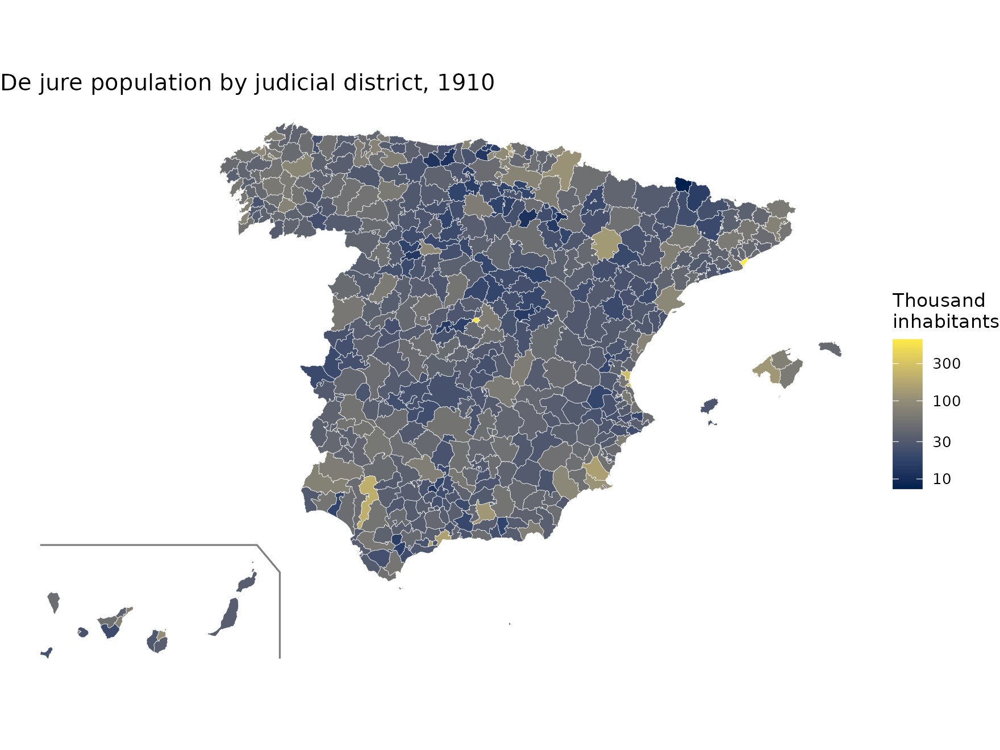
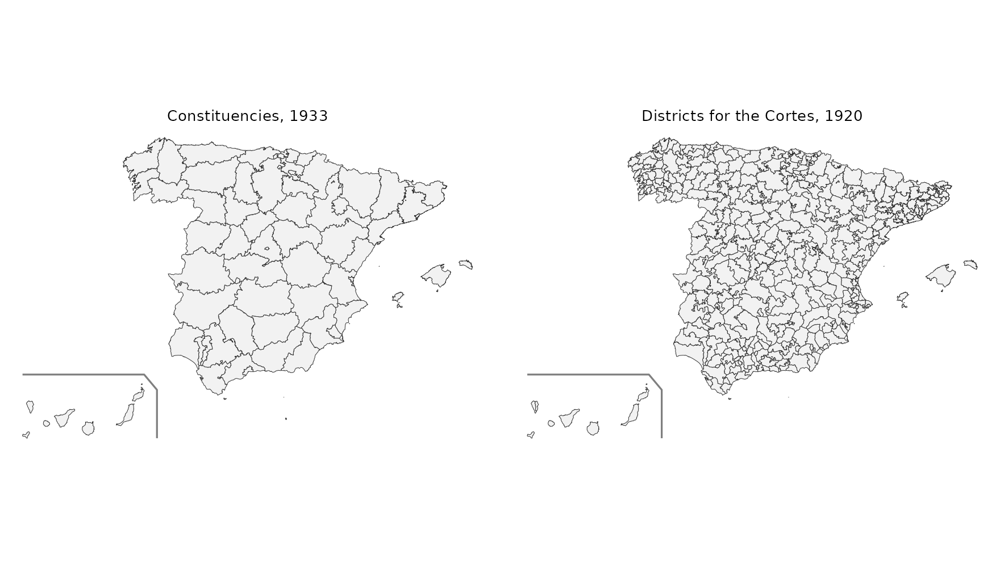
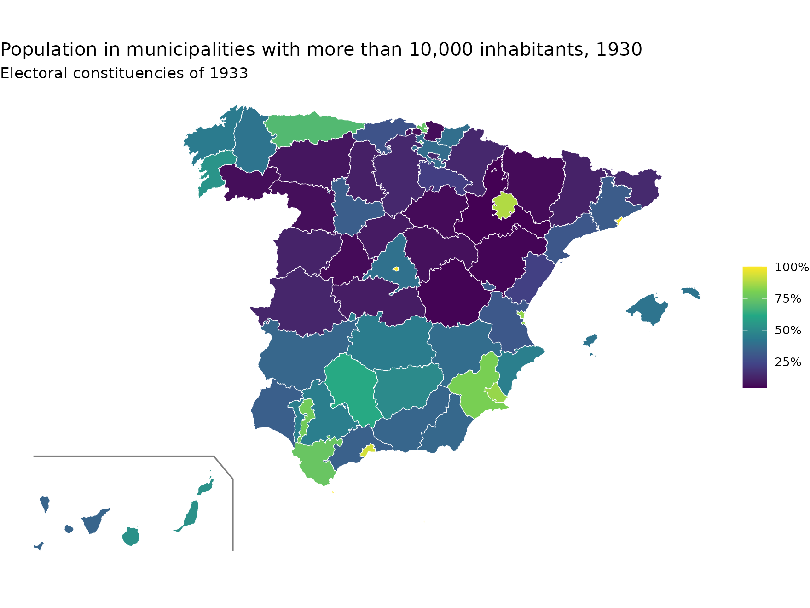

Besides municipalities, the package includes higher-level territorial units built by dissolving the municipalities of each census. That is why they fit the municipal maps exactly: every municipality belongs to a single unit and the units have no gaps or overlaps between them.
| Function | Unit | Years | Reference municipalities |
|---|---|---|---|
esp_get_prov_hist() |
Provinces | every census (1900-2001) | those of the same census |
esp_get_pj_hist() |
Judicial districts | 1900, 1910, 1920, 1930 | those of the same census |
esp_get_circ_hist() |
Districts for the Cortes of the Restoration | 1920 | 1920 census |
esp_get_circ_hist() |
Constituencies of the Second Republic | 1931, 1933, 1936 | 1930 census |
All functions return the unit code (cod_unit), the name
(nom), the number of municipalities (n_mun)
and, if census_data = TRUE (the default), the sum of the
census figures of their municipalities (hogares,
pder, phec, pob_serie).
Unit codes
- Provinces: INE province code (2 digits).
- Judicial districts and electoral districts: 4 digits. The first two are the province and the next two number the units in alphabetical order within the province. Judicial districts have the same code in every census.
Judicial districts
pj <- esp_get_pj_hist(1910, moveCAN = TRUE)
head(sf::st_drop_geometry(pj))
#> cod_unit nom n_mun hogares pder phec pob_serie
#> 1 0101 Laguardia 30 4606 18370 17880 18370
#> 2 0102 Vitoria 55 17414 81029 79301 81029
#> 3 0201 Albacete 5 8426 33804 33557 33804
#> 4 0202 Alcaraz 19 10764 40908 37951 40908
#> 5 0203 Almansa 4 6566 26076 26062 26076
#> 6 0204 Casas-Ibáñez 21 8708 33354 33294 33354
ggplot(pj) +
geom_sf(aes(fill = pder / 1000), colour = "white", linewidth = 0.1) +
scale_fill_viridis_c(option = "cividis", trans = "log10") +
geom_sf(data = mapSpain::esp_get_can_box(), colour = "grey50") +
labs(title = "De jure population by judicial district, 1910", fill = "Thousand\ninhabitants") +
theme_void()
Electoral districts
The 1920 districts for the Cortes are those of the Restoration. The constituencies of 1931, 1933 and 1936 are those of the elections of the Second Republic; in some provinces the capital formed a constituency of its own.
d1920 <- esp_get_circ_hist(1920, moveCAN = TRUE, census_data = FALSE)
d1933 <- esp_get_circ_hist(1933, moveCAN = TRUE, census_data = FALSE)
c(districts_1920 = nrow(d1920), constituencies_1933 = nrow(d1933))
#> districts_1920 constituencies_1933
#> 339 60
d1920$type <- "Districts for the Cortes, 1920"
d1933$type <- "Constituencies, 1933"
ggplot(rbind(d1920, d1933)) +
geom_sf(fill = "grey95", colour = "grey20", linewidth = 0.15) +
geom_sf(data = mapSpain::esp_get_can_box(), colour = "grey50") +
facet_wrap(~type) +
theme_void()
Aggregating your own data
The unitats table gives the unit of every municipality
(cod_ine) for each type (prov,
pj, circ) and year. It allows aggregating any
municipal data. For example, we compute the share of the population
living in municipalities with more than 10,000 inhabitants in each 1933
constituency (using the 1930 census):
eq <- unitats[unitats$tipus == "circ" & unitats$any == 1933, ]
c30 <- censos[censos$censo == 1930 & !is.na(censos$hogares), c("cod_ine", "pder")]
d <- merge(eq, c30, by = "cod_ine")
d$urban <- ifelse(d$pder > 10000, d$pder, 0)
ag <- aggregate(cbind(urban, pder) ~ cod_unit, data = d, FUN = sum)
ag$share_urban <- ag$urban / ag$pder
circ <- merge(esp_get_circ_hist(1933, moveCAN = TRUE), ag[, c("cod_unit", "share_urban")],
by = "cod_unit")
ggplot(circ) +
geom_sf(aes(fill = share_urban), colour = "white", linewidth = 0.2) +
scale_fill_viridis_c(labels = scales::percent) +
geom_sf(data = mapSpain::esp_get_can_box(), colour = "grey50") +
labs(title = "Population in municipalities with more than 10,000 inhabitants, 1930",
subtitle = "Electoral constituencies of 1933", fill = NULL) +
theme_void()
Non-municipal territories
Non-municipal territories (codes 53xxx) are assigned:
- to the province that contains the polygon (according to the SIANE provinces);
- to the judicial district or electoral district of their province with which they share the longest boundary.
Melilla had no district for the Cortes in 1920 and does not appear in that map.